视频链接
1
1-1 intro


1-2 data types
1-3 variables
变量是将数据分配到临时内存位置的一种方式


变量默认不可变，使用 mut 关键字可以使之可变

1-4 functions


1-5 打印宏 println macro
调用宏需要加!符号


1-6 control flow if


1-7 repetition 循环


1-8 setup rust
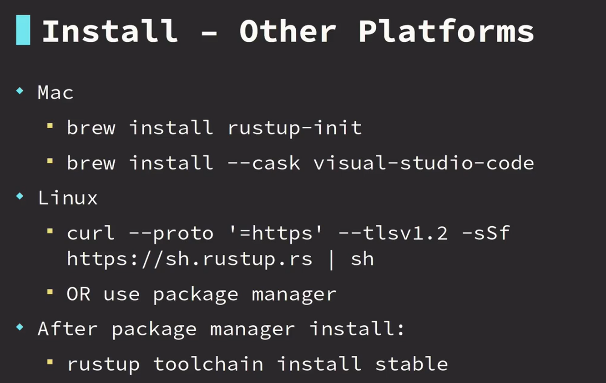

1-9 comment 注释
1-10 activity functions
fn first_name(){
println!("jayson");
}
fn last_name(){
println!("lennon");
}
fn main() {
first_name();
last_name();
}
1-11 numeric types & basic arithmetic
// 1-11 numeric types & basic arithmetic
// cargo run --bin a
fn sub(a: i32, b: i32) -> i32 {
a - b
}
fn main() {
let sum = 2 * 2;
let value = 10 - 5;
let div = 10 / 2;
let mult = 5 * 5;
let sub = sub(8, 3);
let rem = 6 % 3;
let rem2 = 6 % 4;
println!("sum: {}\nvalue: {}\ndiv: {}",
sum, value, div);
println!("mult: {}",mult);
println!("sub: {}",sub);
println!("rem: {}",rem);
println!("rem2: {}",rem2);
}
1-12 activity basic math
fn sum(a: i32, b: i32) -> i32 {
a + b
}
fn display_result(result: i32) {
println!("{:?}", result)
}
fn main() {
let result = sum(2, 3);
display_result(result)
}
2
2-1 control flow with if & else
// control flow with if & else
fn main(){
let age=15;
if age>=21{
println!("ok to purchase")
}else {
println!("cannot purchase")
}
}
2-2
// activity logic with if else
fn main() {
let my_bool = true;
if my_bool {
println!("hello");
} else {
println!("goodbye")
}
}
2-3
// activity logic with if else
fn main() {
let n = 7;
if n > 5 {
println!(">5")
} else if n < 5 {
println!("<5")
} else {
println!("=5")
}
}
2-4 Match


2-5
// match demo1
fn main() {
let my_name = "Bill";
match my_name {
"Jayson" => println!("that is my name"),
"Bob" => println!("not my name"),
"Alice" => println!("hello alice"),
_ => println!("nice to meet you!"),
}
}
2-6
// match demo2
fn main() {
let my_bool = false;
match my_bool {
true => println!("it's true"),
false => println!("it's false"),
// _ => {},
}
}
2-7
// match demo3
fn main() {
let my_num = 2;
match my_num {
1 => println!("one"),
2 => println!("two"),
3 => println!("three"),
_ => println!("other"),
}
}
3
3-1
// loop
fn main() {
let mut i = 3;
loop {
println!("{:?}", i);
i = i - 1;
if i == 0 {
break;
}
}
println!("done")
}
3-2
// loop demo1
fn main() {
let mut n = 1;
loop {
println!("{:?}", n);
if n == 4 {
break;
}
n = n + 1;
}
}
3-3
// loop demo2
fn main() {
let mut i = 1;
while i <= 3 {
println!("{:?}", i);
i = i + 1;
}
}
3-4
// loop demo3
fn main() {
let mut counter = 5;
while counter >= 1 {
println!("{:?}", counter);
counter = counter - 1;
}
println!("done")
}
4
4-1

4-2
enum Direction {
Left,
Right,
Up,
}
fn main() {
let go = Direction::Left;
match go {
// 如果枚举里有的,而没有对应match,会报错
Direction::Left => println!("go left"),
Direction::Right => println!("go right"),
Direction::Up => println!("go up")
}
}
4-3
// enum demo1
enum Color {
Red,
Yellow,
Blue,
}
fn print_color(c: Color) {
match c {
Color::Red => { println!("red") }
Color::Yellow => { println!("yellow") }
Color::Blue => { println!("blue") }
}
}
fn main() {
print_color(Color::Blue)
}
4-4


4-5
// struct demo
struct GroceryItem {
stock: i32,
price: f64,
}
fn main() {
let cereal = GroceryItem {
stock: 10,
price: 2.99,
};
println!("stock: {:?}",cereal.stock);
println!("price: {:?}",cereal.price);
}
4-6
// enum struct demo
enum Flavor {
Sparkling,
Sweet,
Fruity,
}
struct Drink {
flavor: Flavor,
fluid_oz: f64,
}
fn print_drink(drink: Drink) {
match drink.flavor {
Flavor::Sparkling => { println!("sparkling") }
Flavor::Sweet => { println!("sweet") }
Flavor::Fruity => { println!("fruity") }
}
println!("oz: {:?}", drink.fluid_oz);
}
fn main() {
let sweet = Drink {
flavor: Flavor::Sweet,
fluid_oz: 6.0,
};
print_drink(sweet);
let fruity = Drink {
flavor: Flavor::Fruity,
fluid_oz: 10.0,
};
print_drink(fruity);
}
4-7

4-8
// tuple demo1
fn main() {
let coord = (2, 3);
println!("{:?} {:?}", coord.0, coord.1);
let (x, y) = (2, 3);
println!("{:?} {:?}", x, y);
let (name, age) = ("Emma", 20);
println!("{:?} {:?}", name, age);
let favorites = ("red", 14, "TX", "pizza", "TV SHOW", "home");
let state = favorites.2;
let place = favorites.5;
println!("{:?} {:?}", state, place);
}
4-9
// tuple demo2
fn coordinate() -> (i32, i32) {
(1, 7)
}
fn main() {
let (x, y) = coordinate();
if y > 5 {
println!(">5")
} else if y < 5 {
println!("<5")
} else {
println!("=5")
}
}
4-10

4-11
enum Access {
Admin,
Manager,
User,
Guest,
}
fn main() {
let access_level = Access::Guest;
let can_access_file = match access_level {
Access::Admin => true,
_ => false,
};
println!("can access: {:?}", can_access_file)
}
4-12
fn print_msg(gt_100: bool) {
match gt_100 {
true => { println!("its big") }
false => { println!("its small") }
}
}
fn main() {
let value = 100;
let is_gt_100 = value > 100;
print_msg(is_gt_100)
}
5
5-1 intermediate memory


5-2 ownership
(move)：调用第一次display_light时，dull的所有权转移到了display_light，再次调用，dull已经没有值(被所有者使用后删除)
(borrow)：因为是借用，传递的是变量引用（地址），所以调用多少层display都不会删除该变量（dull）
5-3
struct Book {
pages: i32,
rating: i32,
}
fn display_page_count(book: &Book) {
println!("pages = {:?}", book.pages)
}
fn display_rating(book: &Book) {
println!("rating = {:?}", book.rating)
}
fn main() {
let book = Book {
pages: 5,
rating: 9,
};
display_page_count(&book);
display_rating(&book);
}
5-4 impl
struct Temperature {
degrees_f: f64,
}
impl Temperature {
// Self -> Temperature
fn freezing() -> Self {
Self { degrees_f: 32.0 }
}
fn boiling() -> Self {
Self { degrees_f: 212.0 }
}
// self -> instance
fn show_temp(&self) {
println!("{:?} degrees F", self.degrees_f);
}
}
fn main() {
let hot = Temperature { degrees_f: 99.9 };
hot.show_temp();
let cold = Temperature::freezing();
cold.show_temp();
cold.show_temp();
cold.show_temp();
let boiling = Temperature::boiling();
boiling.show_temp();
boiling.show_temp();
boiling.show_temp();
}
6
6-1
struct GroceryItem {
quantity: i32,
id: i32,
}
fn display_quantity(item: &GroceryItem) {
println!("quantity: {:?}", item.quantity);
}
fn display_id(item: &GroceryItem) {
println!("quantity: {:?}", item.id);
}
fn main() {
let my_item = GroceryItem {
quantity: 3,
id: 99,
};
display_quantity(&my_item);
display_id(&my_item);
}
6-2
enum Color {
Brown,
Red,
}
impl Color {
fn print(&self) {
match self {
Color::Brown => { println!("brown") }
Color::Red => { println!("red") }
}
}
}
struct Dimensions {
width: f64,
height: f64,
depth: f64,
}
impl Dimensions {
fn print(&self) {
println!("weight: {:?}", self.width);
println!("height: {:?}", self.height);
println!("depth: {:?}", self.depth);
}
}
struct ShippingBox {
color: Color,
weight: f64,
dimensions: Dimensions,
}
impl ShippingBox {
fn new(weight: f64, color: Color, dimensions: Dimensions) -> Self {
Self {
weight,
color,
dimensions,
}
}
fn print(&self) {
self.color.print();
self.dimensions.print();
println!("weight: {:?}", self.weight);
}
}
fn main() {
let small_dimensions = Dimensions {
width: 1.0,
height: 2.0,
depth: 3.0,
};
let small_box=ShippingBox::new(5.0,Color::Red,small_dimensions);
small_box.print();
}
6-3 vector

6-4
struct Test {
score: i32,
}
fn main() {
let my_score = vec![
Test { score: 90 },
Test { score: 88 },
Test { score: 77 },
Test { score: 93 },
];
for test in my_score {
println!("score = {:?}", test.score);
}
}
6-5
fn main() {
let my_numbers = vec![10, 20, 30, 40];
// 这里用的是&,否则下面的.len会报错
for num in &my_numbers {
match num {
30 => println!("thirty"),
_ => println!("{:?}", num)
}
}
println!("number of elements = {:?}", my_numbers.len())
}
6-6 strings
6-7
struct LineItem {
name: String,
count: i32,
}
fn print_name(name: &str) {
println!("name: {:?}", name);
}
fn main() {
let receipt = vec![
LineItem {
name: "cereal".to_owned(),
count: 1,
},
LineItem {
name: String::from("fruit"),
count: 3,
},
];
for item in receipt {
print_name(&item.name);
println!("count: {:?}", item.count)
}
}
6-8
struct Person {
name: String,
fav_color: String,
age: i32,
}
fn print(data: &str) {
println!("{:?}", data)
}
fn main() {
let people = vec![
Person {
name: String::from("George"),
fav_color: String::from("green"),
age: 7,
},
Person {
name: String::from("Anna"),
fav_color: String::from("purple"),
age: 9,
},
Person {
name: String::from("Katie"),
fav_color: String::from("blue"),
age: 14,
},
];
for p in people {
if p.age <= 10 {
print(&p.name);
print(&p.fav_color);
}
}
}
7
7-1 derive
#[derive(Debug, Clone, Copy)]
enum Position {
Manager,
Supervisor,
Worker,
}
// 允许打印
#[derive(Debug, Clone, Copy)]
struct Employee {
position: Position,
work_hours: i64,
}
fn print_employee(emp: Employee) {
println!("{:?}", emp);
}
fn main() {
let me = Employee {
position: Position::Worker,
work_hours: 40,
};
// 因为有copy和clone，所有权不再转移，而是自动复制数据
print_employee(me);
print_employee(me);
}
7-2 type annotations
显示声明类型


7-3
7-4
enum Discount {
Percent(i32),
Flat(i32),
}
struct Ticket {
event: String,
price: i32,
}
fn main() {
let n = 3;
match n {
3 => println!("three"),
// 别名
other => println!("number: {:?}", other)
}
let flat = Discount::Flat(2);
match flat {
Discount::Flat(2) => println!("flat 2"),
Discount::Flat(amount) => println!("flat discount of {:?}", amount),
_ => (),
}
let concert = Ticket {
event: "convert".to_owned(),
price: 50,
};
match concert {
Ticket { price: 50, event } => println!("event @ 50 = {:?}", event),
Ticket { price, .. } => println!("price = {:?}", price),
}
}
7-5
enum Ticket {
Backstage(f64, String),
Standard(f64),
Vip(f64, String),
}
fn main() {
let tickets = vec![
Ticket::Backstage(50.0, "Billy".to_owned()),
Ticket::Standard(15.0),
Ticket::Vip(30.0, "Amy".to_owned()),
];
for ticket in tickets {
match ticket {
Ticket::Backstage(price, holder) => {
println!("Backstage ticket Holder: {:?}, price: {:?}", holder, price)
}
Ticket::Standard(price) => {
println!("Standard Price: {:?}", price)
}
Ticket::Vip(price, holder) => {
println!("VIP ticket Holder: {:?}, price: {:?}", holder, price)
}
}
}
}
7-6 Option Type


7-7
struct Survey {
q1: Option<i32>,
q2: Option<bool>,
q3: Option<String>,
}
fn main() {
let response = Survey {
q1: None,
// q1: Some(12),
q2: Some(true),
q3: Some("A".to_owned()),
};
match response.q1 {
None => { println!("q1: no response!") }
Some(ans) => { println!("q1: {:?}", ans) }
}
match response.q2 {
None => { println!("q1: no response!") }
Some(ans) => { println!("q1: {:?}", ans) }
}
match response.q3 {
None => { println!("q1: no response!") }
Some(ans) => { println!("q1: {:?}", ans) }
}
}
7-8
struct Student {
name: String,
locker: Option<i32>,
}
fn main() {
let mary = Student {
name: "Mary".to_owned(),
locker: None,
// locker: Some(3),
};
println!("student: {:?}", mary.name);
match mary.locker {
None => { println!("no locker assigned"); }
Some(num) => { println!("locker number: {:?}", num) }
}
}
7-9 generate document
/// A favorite color
enum Color {
Red,
Blue,
}
/// A piece of mail
struct Mail {
address: String,
}
/// Adds two numbers together
fn add(a: i32, b: i32) -> i32 {
a + b
}
/// 生成文档 cargo doc --open
fn main() {}
cargo doc --open

7-10 standard library
# 打开rust文档
rustup doc
fn main() {
let numbers=vec![1,2,3];
match numbers.is_empty() {
true => { println!("no numbers");}
false => { println!("has numbers");}
}
}
7-11
fn main() {
let my_str="this is my STRING";
println!("uppercase: {:?}",my_str.to_uppercase());
println!("lowercase: {:?}", my_str.to_lowercase());
}
8
8-1 Result Type
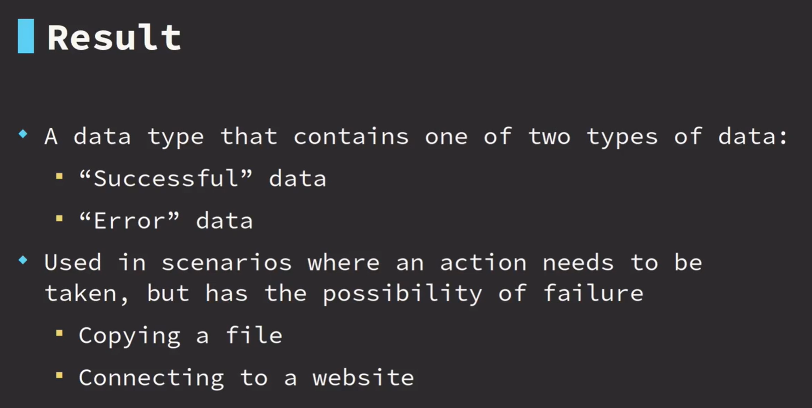
8-2
#[derive(Debug)]
enum MenuChoice {
MainMenu,
Start,
Quit,
}
fn get_choice(input: &str) -> Result<MenuChoice, String> {
match input {
"mainmenu" => { Ok(MenuChoice::MainMenu) }
"start" => { Ok(MenuChoice::Start) }
"quit" => { Ok(MenuChoice::Quit) }
_ => Err("menu choice not found".to_owned())
}
}
fn print_choice(choice: &MenuChoice) {
println!("choice = {:?}", choice);
}
fn pick_choice(input: &str) -> Result<(), String> {
// ?会自动匹配result,然后返回对应结果
let choice: MenuChoice = get_choice(input)?;
print_choice(&choice);
Ok(())
}
fn main() {
let choice: Result<MenuChoice, _> = get_choice("mainmenu");
match choice {
Ok(choice) => { print_choice(&choice) }
Err(e) => { println!("error = {:?}", e); }
}
let choice: Result<MenuChoice, _> = get_choice("other");
match choice {
Ok(choice) => { print_choice(&choice) }
Err(e) => { println!("error = {:?}", e); }
}
let choice = pick_choice("start");
println!("choice value = {:?}", choice);
}
8-3
struct Customer {
age: i32,
}
fn try_purchase(customer: &Customer) -> Result<(), String> {
if customer.age < 21 {
Err("customer must be at least 21 years old".to_owned())
} else { Ok(()) }
}
fn main() {
let ashley = Customer { age: 20 };
let purchased = try_purchase(&ashley);
println!("{:?}", purchased);
let ashley = Customer { age: 22 };
let purchased = try_purchase(&ashley);
println!("{:?}", purchased);
}
8-4
use crate::Position::Manager;
enum Position {
Maintenance,
Marketing,
Manager,
LineSupervisor,
KitchenStaff,
AssemblyTech,
}
enum Status {
Active,
Terminated,
}
struct Employee {
position: Position,
status: Status,
}
fn try_access(employee: &Employee) -> Result<(), String> {
match employee.status {
// return Err 终止了后续执行
Status::Terminated => return Err("terminated".to_owned()),
_ => (),
}
match employee.position {
Position::Maintenance => Ok(()),
Position::Marketing => Ok(()),
Position::Manager => Ok(()),
_ => Err("invalid position".to_owned())
}
}
fn print_access(employee: &Employee) -> Result<(), String> {
let attempt_access = try_access(employee)?;
println!("access ok");
Ok(())
}
fn main() {
let manager = Employee {
position: Position::Manager,
status: Status::Active,
};
match print_access(&manager) {
Err(e) => println!("access denied: {:?}", e),
_ => ()
}
let line = Employee {
position: Position::LineSupervisor,
status: Status::Active,
};
match print_access(&line) {
Err(e) => println!("access denied: {:?}", e),
_ => ()
}
let terminated = Employee {
position: Position::LineSupervisor,
status: Status::Terminated,
};
match print_access(&terminated) {
Err(e) => println!("access denied: {:?}", e),
_ => ()
}
}
9
9-1 hashmap


9-2
use std::collections::HashMap;
#[derive(Debug)]
struct Contents {
content: String,
}
fn main() {
let mut lockers = HashMap::new();
lockers.insert(1, Contents { content: "stuff".to_owned() });
lockers.insert(2, Contents { content: "shirt".to_owned() });
lockers.insert(3, Contents { content: "gym shorts".to_owned() });
for (locker_id, content) in lockers.iter() {
println!("id: {:?}, content: {:?}",locker_id,content);
}
}
9-3
use std::collections::HashMap;
fn main() {
let mut stock = HashMap::new();
stock.insert("Chair", 5);
stock.insert("Bed", 3);
stock.insert("Table", 2);
stock.insert("Couch", 0);
let mut total_stock = 0;
for (item, qty) in stock.iter() {
total_stock = total_stock + qty;
let stock_count = if qty == &0 {
"out of stock".to_owned()
} else {
format!("{:?}", qty)
};
println!("item={:?}, stock={:?}", item, stock_count);
}
println!("total stock={:?}", total_stock);
}
10
10-1 Basic Closures
fn add_fn(a: i32, b: i32) -> i32 {
a + b
}
fn main() {
// 闭包
let add1 = |a: i32, b: i32| -> i32{
a + b
};
let add2 = |a, b| a + b;
let sum = add_fn(1, 1);
println!("sum: {:?}", sum);
let sum1 = add1(1, 2);
println!("sum1: {:?}", sum1);
let sum2 = add2(1, 3);
println!("sum2: {:?}", sum2);
}
10-2 map combinator
fn maybe_num() -> Option<i32> {
return None;
}
fn maybe_word() -> Option<String> {
return Some("hello".to_owned());
}
fn main() {
let plus_one = match maybe_num() {
None => { None }
Some(num) => { Some(num + 1) }
};
println!("res: {:?}", plus_one);
// map只在有值的时候执行,none的时候不会运行
let plus_one = maybe_num().map(|num| num + 1);
println!("res: {:?}", plus_one);
let word_len = maybe_word()
.map(|word| word.len())
.map(|len| len * 2);
println!("res: {:?}", word_len);
}
10-3
#[derive(Debug)]
struct User {
user_id: i32,
name: String,
}
fn find_user(name: &str) -> Option<i32> {
let name = name.to_lowercase();
match name.as_str() {
"sam" => Some(1),
"matt" => Some(5),
"katie" => Some(9),
_ => None
}
}
fn main() {
let user_name = "sam";
let user = find_user(user_name).map(|user_id| {
User {
user_id,
name: user_name.to_owned(),
}
});
match user {
Some(user) => { println!("{:?}", user); }
None => { println!("user not found"); }
}
}
10-4
fn main() {
let a: Option<i32> = Some(12);
let a_is_some = a.is_some();
println!("a_is_some: {:?}",a_is_some);
let a_is_none = a.is_none();
println!("a_is_none: {:?}",a_is_none);
let a_mapped = a.map(|num| num + 1);
println!("a_mapped: {:?}",a_mapped);
// filter里返回的式子如果为true，就保留传入的值，为false就丢弃
let a_filtered = a.filter(|num| num == &1);
println!("a_filtered: {:?}",a_filtered);
// 如果a(调用or_else)的变量没有值，就返回式子里的值
let a_or_else = a.or_else(|| Some(5));
println!("a_or_else: {:?}",a_or_else);
let a_filtered = a.filter(|num| num == &1);
println!("a_filtered: {:?}",a_filtered);
// 和orelse差不多，但是返回的是值而不是option，会把值填入调用者
let unwrapped = a.unwrap_or_else(|| 0);
println!("unwrapped: {:?}",unwrapped);
}
10-5
#[derive(Debug, Eq, PartialEq)]
enum Access {
Admin,
User,
Guest,
}
fn maybe_access(name: &str) -> Option<Access> {
match name {
"admin" => Some(Access::Admin),
"gary" => Some(Access::User),
_ => None
}
}
fn root() -> Option<Access> {
Some(Access::Admin)
}
fn part_1() -> bool {
maybe_access("admin").is_some()
}
fn part_2() -> Option<Access> {
maybe_access("root").or_else(|| root())
}
fn part_3() -> Access {
maybe_access("Alice").unwrap_or_else(|| Access::Guest)
}
fn main() {}
#[cfg(test)]
mod test {
use crate::*;
#[test]
fn check_part_1() {
assert_eq!(part_1(), true, "Admins have an access level")
}
#[test]
fn check_part_2() {
assert_eq!(part_2(), Some(Access::Admin), "Root users have Admin access")
}
#[test]
fn check_part_3() {
assert_eq!(part_3(), Access::Guest, "Alice is a guest")
}
}
10-6 iterator
fn main() {
let numbers = vec![1, 2, 3, 4, 5];
// bad
// let mut plus_one = vec![];
// for num in numbers {
// plus_one.push(num + 1);
// }
// println!("{:?}", plus_one);
// better
let plus_one: Vec<_> = numbers
.iter()
.map(|num| num + 1)
.collect(); // -> new vec![]
println!("{:?}", plus_one);
let new_nums: Vec<_> = numbers
.iter()
.filter(|num| num <= &&3)
.collect(); // -> new vec![]
println!("{:?}", new_nums);
let numbers = vec![1, 2, 3, 4, 5];
let find_me: Option<&i32> = numbers
.iter()
.find(|num| num == &&3);
println!("{:?}", find_me);
let count = numbers
.iter()
.count();
println!("{:?}", count);
}
10-7
fn main() {
let data: Vec<_> = vec![1, 2, 3, 4, 5]
.iter()
.map(|num| num * 3)
.filter(|num| num > &10)
.collect();
for num in data {
println!("{:?}", num);
}
}
10-8 range
fn main() {
let range = 1..=3;
println!("{:?}",range);
let range = 1..4;
println!("{:?}",range);
// 左闭右开
for num in 1..4 {
println!("{:?}", num);
}
// 左闭右开
for ch in 'a'..'f'{
println!("{:?}",ch);
}
// 闭区间
for ch in 'a'..='f'{
println!("{:?}",ch);
}
}
10-9
enum Color {
Red,
Blue,
Green,
}
fn main() {
let maybe_user = Some("Jerry");
match maybe_user {
Some(user) => println!("user={:?}", user),
None => println!("no user")
}
if let Some(user) = maybe_user {
println!("user={:?}", user);
} else {
println!("no user");
}
let red = Color::Red;
if let Color::Red = red {
println!("its red!");
} else {
println!("its not red");
}
}
10-10
fn main() {
let mut data = Some(3);
while let Some(i) = data {
println!("loop");
data = None;
}
let numbers = vec![1, 2, 3];
let mut number_iter = numbers.iter();
while let Some(num) = number_iter.next() {
println!("num = {:?}", num);
}
println!("done");
}
11
11-1 modules
mod greet {
// 要使用外部库要在mod里加use
use std::collections::HashMap;
pub fn hello() {
println!("hello");
}
pub fn goodbye() {
println!("goodbye");
}
}
mod math {
pub fn add(a: i32, b: i32) -> i32 {
a + b
}
pub fn sub(a: i32, b: i32) -> i32 {
a - b
}
}
fn main() {
use greet::hello;
hello();
greet::goodbye();
println!("{}", math::add(1, 2));
println!("{}", math::sub(3, 2));
}
11-2
mod msg {
pub fn trim(msg: &str) -> &str {
msg.trim()
}
}
mod math {
pub fn add(lhs: isize, rhs: isize) -> isize {
lhs + rhs
}
pub fn sub(lhs: isize, rhs: isize) -> isize {
lhs - rhs
}
pub fn mul(lhs: isize, rhs: isize) -> isize {
lhs * rhs
}
}
fn main() {
let res = {
let two_plus_two = math::add(2, 2);
let three = math::sub(two_plus_two, 1);
math::mul(three, three)
};
assert_eq!(res, 9);
println!("(2 + 2 - 1) * 3 = {}", res);
let hello = {
let msg = "Hello ";
let msg = msg::trim(msg);
// capitalize(msg);
msg
};
let world = "world";
let msg = format!("{}", hello.to_owned() + ", " + world);
assert_eq!(&msg, "Hello, world");
println!("{}", msg);
}
11-3 testing
fn all_caps(word: &str) -> String {
word.to_uppercase()
}
fn main() {}
// sh: cargo test
#[cfg(test)]
mod test {
use crate::*;
#[test]
fn check_all_caps() {
let res = all_caps("hello");
let exp = String::from("HELLO");
println!("{:?} {:?}",res,exp);
assert_eq!(res, exp, "string should be all uppercase")
}
}
11-4
fn clamp(n: i32, lower: i32, upper: i32) -> i32 {
if n < lower {
lower
} else if n > upper {
upper
} else { n }
}
fn div(a: i32, b: i32) -> Option<i32> {
if b == 0 {
None
} else {
Some(a / b)
}
}
fn concat(first: &str, second: &str) -> String {
format!("{}{}", first, second)
}
fn main() {}
#[cfg(test)]
mod test {
use crate::*;
#[test]
fn clamp_lower() {
let res = clamp(10, 100, 1000);
let expected = 100;
assert_eq!(res, expected, "should be 100")
}
#[test]
fn clamp_upper() {
let res = clamp(5000, 100, 1000);
let expected = 1000;
assert_eq!(res, expected, "should be 1000")
}
#[test]
fn check_div() {
let res = div(6, 2);
let expected = Some(3);
assert_eq!(res, expected, "should be 3")
}
#[test]
fn check_div0() {
let res = div(1, 0);
let expected = None;
assert_eq!(res, expected, "should be 3")
}
#[test]
fn check_concat() {
let res = concat("a", "b");
let expected = String::from("ab");
assert_eq!(res, expected, "should be ab")
}
}
11-5 External Crates

11-6
use chrono::prelude::*;
fn main() {
let local: DateTime<Local> = Local::now();
println!("{:?}", local);
println!("{}", local.format("%Y-%m-%d %H:%M:%S").to_string());
}
# Cargo.toml
[package]
name = "hello"
version = "0.1.0"
edition = "2021"
# See more keys and their definitions at https://doc.rust-lang.org/cargo/reference/manifest.html
[dependencies]
chrono = "0.4.26"
11-7 External Modules
bin目录的文件会被单独编译，lib目录的文件可以被bin里的程序使用，mod.rs声明模块，
如果是带花括号的mod，是内联mod，而声明并以;结尾的是external mod
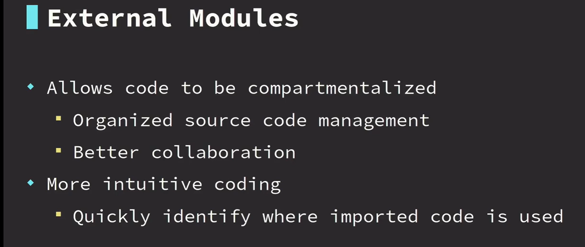


使用use，可以导出mod特定点，然后简化访问


11-8
fn main() {
use activity::math;
use activity::msg::{trim};
let res = {
let two_plus_two = math::add(2, 2);
let three = math::sub(two_plus_two, 1);
math::mul(three, three)
};
assert_eq!(res, 9);
println!("(2 + 2 - 1) * 3 = {}", res);
let hello = {
let msg = "Hello ";
let msg = trim(msg);
// capitalize(msg);
msg
};
let world = "world";
let msg = format!("{}", hello.to_owned() + ", " + world);
assert_eq!(&msg, "Hello, world");
println!("{}", msg);
}
# Cargo.toml
[lib]
name="activity"
path="src/activitylib.rs"
12
12-1 user input
use std::io;
fn get_input() -> io::Result<String> {
// 缓冲区
let mut buffer = String::new();
io::stdin().read_line(&mut buffer)?;
Ok(buffer.trim().to_owned())
}
fn main() {
let mut all_input = vec![];
let mut times_input = 0;
while times_input < 2 {
match get_input() {
Ok(words) => {
all_input.push(words);
times_input += 1;
}
Err(e) => { println!("error{:?}", e); }
}
}
for input in all_input{
println!("Original: {:?}, capitalized: {:?}",input,input.to_uppercase());
}
}
12-2
use std::io;
enum PowerState {
Off,
Sleep,
Reboot,
Shutdown,
Hibernate,
}
impl PowerState {
fn new(state: &str) -> Option<PowerState> {
let state = state.trim().to_lowercase();
// String -> str
match state.as_str() {
"off" => Some(PowerState::Off),
"sleep" => Some(PowerState::Sleep),
"reboot" => Some(PowerState::Reboot),
"shutdown" => Some(PowerState::Shutdown),
"hibernate" => Some(PowerState::Hibernate),
_ => None
}
}
}
fn print_power_action(state: PowerState) {
use PowerState::*;
match state {
Off => { println!("turning off"); }
Sleep => { println!("sleeping"); }
Reboot => { println!("rebooting"); }
Shutdown => { println!("shutting down"); }
Hibernate => { println!("hibernating"); }
}
}
fn main() {
let mut buffer = String::new();
let user_input_status = io::stdin().read_line(&mut buffer);
// 输入ok
if user_input_status.is_ok() {
match PowerState::new(&buffer) {
Some(state) => print_power_action(state),
None => println!("invalid power state")
}
} else {
println!("error reading input");
}
}
12-3


12-4 ~ 12-9
use std::collections::HashMap;
use std::io;
use std::num::ParseFloatError;
#[derive(Debug, Clone)]
pub struct Bill {
name: String,
amount: f64,
}
pub struct Bills {
inner: HashMap<String, Bill>,
}
impl Bills {
fn new() -> Self {
Self {
inner: HashMap::new(),
}
}
fn add(&mut self, bill: Bill) {
self.inner.insert(bill.name.to_string(), bill);
}
fn get_all(&self) -> Vec<&Bill> {
self.inner.values().collect()
}
fn remove(&mut self, name: &str) -> bool {
self.inner.remove(name).is_some()
}
fn update(&mut self, name: &str, amount: f64) -> bool {
match self.inner.get_mut(name) {
Some(bill) => {
bill.amount = amount;
true
}
None => false,
}
}
}
fn get_input() -> Option<String> {
let mut buffer = String::new();
while io::stdin().read_line(&mut buffer).is_err() {
println!("Please enter your data again");
}
let input = buffer.trim().to_owned();
if &input == "" {
None
} else {
Some(input)
}
}
fn get_bill_amount() -> Option<f64> {
println!("Amount:");
loop {
let input = match get_input() {
None => { return None; }
Some(input) => { input }
};
if &input == "" {
return None;
}
let parse_input: Result<f64, _> = input.parse();
match parse_input {
Ok(amount) => { return Some(amount); }
Err(_) => { println!("Please enter a number"); }
}
}
}
mod menu {
use crate::{Bill, Bills, get_bill_amount, get_input};
pub fn add_bill(bills: &mut Bills) {
println!("Bill name:");
let name = match get_input() {
None => { return; }
Some(input) => { input }
};
println!("Bill amount:");
let amount = match get_bill_amount() {
None => { return; }
Some(input) => { input }
};
let bill = Bill { name, amount };
bills.add(bill);
println!("Bill added");
}
pub fn view_bills(bills: &Bills) {
for bill in bills.get_all() {
println!("{:?}", bill);
}
}
pub fn remove_bill(bills: &mut Bills) {
for bill in bills.get_all() {
println!("{:?}", bill);
}
println!("Enter bill name to remove:");
let name = match get_input() {
None => { return; }
Some(name) => { name }
};
if bills.remove(&name) {
println!("bill removed");
} else {
println!("bill not found");
}
}
pub fn update_bill(bills: &mut Bills) {
for bill in bills.get_all() {
println!("{:?}", bill);
}
println!("Enter bill to update:");
let name = match get_input() {
None => { return; }
Some(name) => { name }
};
println!("Enter new amount");
let amount = match get_bill_amount() {
None => { return; }
Some(amount) => { amount }
};
if bills.update(&name, amount) {
println!("updated");
} else {
println!("bill not found");
}
}
}
/// 枚举系统功能
enum MainMenu {
AddBill,
ViewBill,
RemoveBill,
UpdateBill,
}
impl MainMenu {
fn from_str(input: &str) -> Option<MainMenu> {
match input {
"1" => Some(Self::AddBill),
"2" => Some(Self::ViewBill),
"3" => Some(Self::RemoveBill),
"4" => Some(Self::UpdateBill),
_ => None
}
}
fn show() {
println!("");
println!(" == Bill Manager == ");
println!("1. Add Bill");
println!("2. View Bill");
println!("3. Remove Bill");
println!("4. Update Bill");
println!("");
println!("Enter selection");
}
}
fn run_program() -> Option<()> {
let mut bills = Bills::new();
loop {
MainMenu::show();
// expect -> 如果出错就打印
let input = get_input().expect("no data entered");
match MainMenu::from_str(input.as_str()) {
Some(MainMenu::ViewBill) => menu::view_bills(&bills),
Some(MainMenu::AddBill) => menu::add_bill(&mut bills),
Some(MainMenu::RemoveBill) => menu::remove_bill(&mut bills),
Some(MainMenu::UpdateBill) => menu::update_bill(&mut bills),
None => break,
}
}
None
}
fn main() {
run_program();
}
13
13-1 traits
13-2
trait Fall {
fn hit_ground(&self);
}
struct Vase;
impl Fall for Vase {
fn hit_ground(&self) {
println!("the vase broke!");
}
}
struct Cat;
impl Fall for Cat {
fn hit_ground(&self) {
println!("the cat casually walked away");
}
}
fn fall(thing: impl Fall) {
thing.hit_ground();
}
fn main() {
fall(Vase{});
fall(Cat{});
}
13-3
trait Perimeter {
fn calculate_perimeter(&self) -> i32;
}
struct Square {
side: i32,
}
impl Perimeter for Square {
fn calculate_perimeter(&self) -> i32 {
self.side * 4
}
}
struct Triangle {
side_a: i32,
side_b: i32,
side_c: i32,
}
impl Perimeter for Triangle {
fn calculate_perimeter(&self) -> i32 {
self.side_a + self.side_b + self.side_c
}
}
fn print_perimeter(shape: impl Perimeter) {
let perimeter = shape.calculate_perimeter();
println!("perimeter = {:?}", perimeter);
}
fn main() {
let square = Square { side: 5 };
print_perimeter(square);
let triangle = Triangle {
side_a: 2,
side_b: 3,
side_c: 4,
};
print_perimeter(triangle)
}
13-4 trait default
#[derive(Debug)]
struct Package {
weight: f64,
}
impl Package {
fn new(weight: f64) -> Self {
Self { weight }
}
}
impl Default for Package {
fn default() -> Self {
Self { weight: 3.0 }
}
}
fn main() {
let p = Package::default();
println!("{:?}",p);
}
13-5 generic functions


13-6
trait CheckIn {
fn check_in(&self);
fn process(&self);
}
struct Pilot;
impl CheckIn for Pilot {
fn check_in(&self) {
println!("checked in as pilot");
}
fn process(&self) {
println!("pilot enters the cockpit");
}
}
struct Passenger;
impl CheckIn for Passenger {
fn check_in(&self) {
println!("checked in as passenger");
}
fn process(&self) {
println!("passenger takes a seat");
}
}
struct Cargo;
impl CheckIn for Cargo {
fn check_in(&self) {
println!("cargo checked in");
}
fn process(&self) {
println!("cargo moved to storage");
}
}
fn process_item<T: CheckIn>(item: T) {
item.check_in();
item.process();
}
fn main() {
let paul=Passenger;
let kathy=Pilot;
let cargo1=Cargo;
let cargo2=Cargo;
process_item(paul);
process_item(kathy);
process_item(cargo1);
process_item(cargo2);
}
13-7
#[derive(Debug)]
enum ServicePriority {
High,
Standard,
}
trait Priority {
fn get_priority(&self) -> ServicePriority;
}
#[derive(Debug)]
struct ImportantGuest;
impl Priority for ImportantGuest {
fn get_priority(&self) -> ServicePriority {
ServicePriority::High
}
}
#[derive(Debug)]
struct Guest;
impl Priority for Guest {
fn get_priority(&self) -> ServicePriority {
ServicePriority::Standard
}
}
fn print_guest_priority<T: Priority + std::fmt::Debug>(guest: T) {
println!("{:?} is {:?} priority", guest, guest.get_priority());
}
fn main() {
print_guest_priority(Guest);
print_guest_priority(ImportantGuest);
}
13-8 generic structures


13-9


13-10
struct Dimensions {
width: f64,
height: f64,
depth: f64,
}
trait Convey {
fn weight(&self) -> f64;
fn dimensions(&self) -> Dimensions;
}
struct ConveyorBelt<T: Convey> {
pub items: Vec<T>,
}
impl<T: Convey> ConveyorBelt<T> {
pub fn add(&mut self, item: T) {
self.items.push(item);
}
}
struct CarPart {
width: f64,
height: f64,
depth: f64,
weight: f64,
part_number: String,
}
impl Default for CarPart {
fn default() -> Self {
Self {
width: 5.0,
height: 1.0,
depth: 2.0,
weight: 3.0,
part_number: "abc".to_owned(),
}
}
}
impl Convey for CarPart {
fn weight(&self) -> f64 {
self.weight
}
fn dimensions(&self) -> Dimensions {
Dimensions {
width: self.width,
height: self.height,
depth: self.depth,
}
}
}
fn main() {
let mut belt = ConveyorBelt { items: vec![] };
belt.add(CarPart::default());
let mut belt=ConveyorBelt{items:vec![]};
belt.add(5);
}
13-11
// 没有定义任何接口方法,仅作为标记trait
trait Body {}
trait Color {}
#[derive(Debug)]
struct Vehicle<B: Body, C: Color> {
body: B,
color: C,
}
impl<B: Body, C: Color> Vehicle<B, C> {
pub fn new(body: B, color: C) -> Self {
Self { body, color }
}
}
#[derive(Debug)]
struct Car;
impl Body for Car {}
#[derive(Debug)]
struct Truck;
impl Body for Truck {}
#[derive(Debug)]
struct Red;
impl Color for Red {}
#[derive(Debug)]
struct Blue;
impl Color for Blue {}
fn main() {
let red_truck = Vehicle::new(Truck, Red);
let blue_car = Vehicle::new(Car, Blue);
println!("{:?}", red_truck);
println!("{:?}", blue_car);
}
13-12 advance memory
栈和堆两种内存访问方式

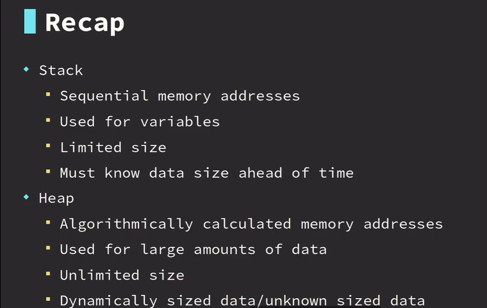
13-13 trait object


13-14
trait Sale {
fn amount(&self) -> f64;
}
struct FullSale(f64);
impl Sale for FullSale {
fn amount(&self) -> f64 {
self.0
}
}
struct OneDollarOffCoupon(f64);
impl Sale for OneDollarOffCoupon {
fn amount(&self) -> f64 {
self.0 - 1.0
}
}
struct TenPercentOffPromo(f64);
impl Sale for TenPercentOffPromo {
fn amount(&self) -> f64 {
self.0 * 0.9
}
}
// dyn是因为内存大小不确定, 所以动态分配
fn calculate_revenue(sales: &Vec<Box<dyn Sale>>) -> f64 {
sales.iter().map(|sale| sale.amount()).sum()
}
fn main() {
let price = 20.0;
let regular = Box::new(FullSale(price));
let coupon = Box::new(OneDollarOffCoupon(price));
let promo = Box::new(TenPercentOffPromo(price));
// ^^^^^^ expected `Box<FullSale>`, found `Box<OneDollarOffCoupon>`
// 默认将vec第一个元素的类型作为vec里的参数的类型
// let sales = vec![regular, coupon, promo];
let sales: Vec<Box<dyn Sale>> = vec![regular, coupon, promo];
let revenue = calculate_revenue(&sales);
println!("total revenue = {}", revenue);
}
13-15


trait Material {
fn cost_per_sq_meter(&self) -> f64;
fn square_meters(&self) -> f64;
fn total_cost(&self) -> f64 {
// 默认实现
self.cost_per_sq_meter() * self.square_meters()
}
}
struct Carpet(f64);
impl Material for Carpet {
fn cost_per_sq_meter(&self) -> f64 {
10.0
}
fn square_meters(&self) -> f64 {
self.0
}
}
struct Tile(f64);
impl Material for Tile {
fn cost_per_sq_meter(&self) -> f64 {
15.0
}
fn square_meters(&self) -> f64 {
self.0
}
}
struct Wood(f64);
impl Material for Wood {
fn cost_per_sq_meter(&self) -> f64 {
20.0
}
fn square_meters(&self) -> f64 {
self.0
}
}
fn total_cost(material: &Vec<Box<dyn Material>>) -> f64 {
material.iter()
.map(|mat| mat.total_cost()).sum()
}
fn main() {
let carpet = Box::new(Carpet(20.0));
let tile = Box::new(Tile(10.0));
let wood = Box::new(Wood(30.0));
let materials: Vec<Box<dyn Material>> = vec![carpet, tile, wood];
let total = total_cost(&materials);
println!("cost = {}", total);
}
14
14-1
 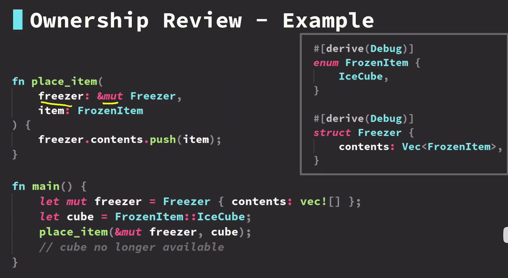
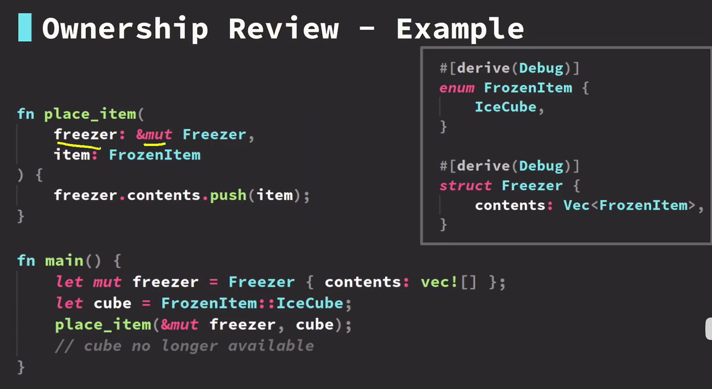


14-2
#[derive(Debug)]
struct Cards {
inner: Vec<IdCard>,
}
#[derive(Debug, Eq, Ord, PartialOrd, PartialEq)]
enum City {
Barland,
Bazopolis,
Fooville,
}
#[derive(Debug)]
struct IdCard {
name: String,
age: u8,
city: City,
}
impl IdCard {
pub fn new(name: &str, age: u8, city: City) -> Self {
Self {
name: name.to_string(),
age,
city,
}
}
}
fn new_ids() -> Cards {
Cards {
inner: vec![
IdCard::new("Amy", 1, City::Fooville),
IdCard::new("Matt", 10, City::Barland),
IdCard::new("Bailee", 20, City::Barland),
IdCard::new("Anthony", 30, City::Bazopolis),
IdCard::new("Tina", 40, City::Bazopolis),
]
}
}
#[derive(Debug)]
struct YoungPeople<'a> {
// 'a -> 生命周期修饰符
// 表明修饰的对象在该struct外已经存在
inner: Vec<&'a IdCard>,
}
impl<'a> YoungPeople<'a> {
fn living_in_fooville(&self) -> Self {
Self {
inner: self.inner.iter()
// 此时返回的是引用的引用
.filter(|id| id.city == City::Fooville)
// 解引用
.map(|id| *id)
.collect()
}
}
}
fn main() {
let ids = new_ids();
let young = YoungPeople {
inner: ids.inner.iter().filter(|id| id.age <= 20).collect()
};
println!("ids");
for id in ids.inner.iter() {
println!("{:?}", id);
}
println!("young");
for id in young.inner.iter() {
println!("{:?}", id);
}
println!("living in fooville");
for id in young.living_in_fooville().inner.iter() {
println!("{:?}", id);
}
}
14-3

// 'static 表示程序运行时就加载到内存, 一直存在, 程序可以访问
const MOCK_DATA: &'static str = include_str!("test.csv");
struct Names<'a> {
inner: Vec<&'a str>,
}
struct Ages<'a> {
inner: Vec<&'a str>,
}
fn main() {
// .skip(n) -> 跳过n行
let data: Vec<_> = MOCK_DATA.split('\n').skip(1).collect();
// PassengerId,Pclass,Name(first_name, last_name),Sex,Age,SibSp,Parch,Ticket,Fare,Cabin,Embarked
// nth(2) 取第3列的值
let first_names: Vec<_> = data.iter()
.filter_map(|line| line.split(',').nth(2)).collect();
let last_names: Vec<_> = data.iter()
.filter_map(|line| line.split(',').nth(3)).collect();
let mut names: Vec<_> = vec![];
for i in 0..first_names.len() {
let f = match first_names.get(i) {
None => "None".to_string(),
// unwrap 不用match, 解出option的some值, 可能引起panic
Some(n) => (*n).split('"').nth(1).unwrap().to_string()
};
let l = match last_names.get(i) {
None => "None".to_string(),
Some(n2) => (*n2).split('"').nth(0).unwrap().to_string()
};
let mut full = String::new();
full.push_str(f.as_str());
full.push_str(l.as_str());
names.push(full);
}
// take(n) 取n个
// for n in names.iter().take(3) {
for n in names.iter().take(3) {
println!("{:?}", n);
}
let ages: Vec<_> = data.iter()
.filter_map(|line| line.split(',').nth(4)).collect();
let ages = Ages { inner: ages };
let first_names: Vec<_> = data.iter()
.filter_map(|line| line.split(',').nth(2)).collect();
let first_names = Names { inner: first_names };
let last_names: Vec<_> = data.iter()
.filter_map(|line| line.split(',').nth(3)).collect();
let last_names = Names { inner: last_names };
let names =
first_names.inner.iter().zip(last_names.inner.iter());
for (f, l) in names.take(5) {
println!("Name: {}, {}", f, l);
}
}
14-4

/**
The str type, also called a 'string slice', is the most primitive string type.
It is usually seen in its borrowed form, &str. It is also the type of string literals, &'static str.
String slices are always valid UTF-8.
**/
fn longest<'a>(one: &'a str, two: &'a str) -> &'a str {
if two > one {
two
} else {
one
}
}
fn main() {
let short = "hello";
let long = "this is a long message";
println!("{}", longest(short, long));
}
15 custom error
15-1


15-2
use chrono::{DateTime, Duration, Utc};
use thiserror::Error;
struct SubwayPass {
id: usize,
funds: isize,
expires: DateTime<Utc>,
}
#[derive(Debug, Error)]
enum PassError {
#[error("expired pass")]
PassExpired,
#[error("insufficient funds: {0}")]
// 资金不足
InsufficientFunds(isize),
#[error("pass read error: {0}")]
// 读取异常
ReadError(String),
}
// 刷卡
fn swipe_card() -> Result<SubwayPass, PassError> {
Err(PassError::ReadError("Magstrip failed to read".to_owned()))
// Ok(SubwayPass {
// id: 0,
// funds: 200,
// expires: Utc::now() + Duration::weeks(52),
// })
}
fn use_pass(pass: &mut SubwayPass, cost: isize) -> Result<(), PassError> {
if Utc::now() > pass.expires {
Err(PassError::PassExpired)
} else {
if pass.funds - cost < 0 {
Err(PassError::InsufficientFunds(pass.funds))
} else {
pass.funds = pass.funds - cost;
Ok(())
}
}
}
fn main() {
let pass_status = swipe_card()
.and_then(|mut pass| use_pass(&mut pass, 3));
match pass_status {
Ok(_) => { println!("ok to board");}
// Err(e) => { println!("error: {}",e);}
Err(e) => match e {
PassError::PassExpired => {}
PassError::InsufficientFunds(f) => {}
PassError::ReadError(s) => {}
}
}
}
15-3
use thiserror::Error;
#[derive(Debug, Error)]
enum ProgramError {
#[error("menu error")]
// 项: Menu, 从: MenuError 转换而来
// 允许MenuError转换到ProgramError
Menu(#[from] MenuError),
#[error("math error")]
Math(#[from] MathError),
}
#[derive(Debug, Error)]
enum MenuError {
#[error("menu item not found")]
NotFount
}
#[derive(Debug, Error)]
enum MathError {
#[error("divide by zero error")]
DivideByZero,
}
fn pick_menu(choice: &str) -> Result<i32, MenuError> {
match choice {
"1" => Ok(1),
"2" => Ok(2),
"3" => Ok(3),
_ => Err(MenuError::NotFount)
}
}
fn divide(a: i32, b: i32) -> Result<i32, MathError> {
if b != 0 {
Ok(a / b)
} else {
Err(MathError::DivideByZero)
}
}
fn run(step: i32) -> Result<(), ProgramError> {
if step == 1 {
pick_menu("4")?;
} else if step == 2 {
divide(1, 0)?;
}
Ok(())
}
fn main() {
println!("{:?}", run(1));
println!("{:?}", run(2));
}
15-4 const
const MAX_SPEED :i32=9000;
fn clamp_speed(speed: i32) -> i32 {
if speed > MAX_SPEED {
MAX_SPEED
} else {
speed
}
}
fn main() {}
15-6 new types
#[derive(Debug, Copy, Clone)]
struct NeverZero(i32);
impl NeverZero {
pub fn new(i: i32) -> Result<Self, String> {
if i == 0 {
Err("cannot be zero".to_owned())
} else {
Ok(Self(i))
}
}
}
fn divide(a: i32, b: NeverZero) -> i32 {
let b = b.0; // NeverZero携带的第一个值
a / b
}
fn main() {
match NeverZero::new(5) {
Ok(nz) => println!("{:?}", divide(10, nz)),
Err(e) => println!("{:?}", e)
}
match NeverZero::new(0) {
Ok(nz) => println!("{:?}", divide(10, nz)),
Err(e) => println!("{:?}", e)
}
}
15-7
#[derive(Debug)]
enum Color {
Black,
Blue,
Brown,
Custom(String),
Gray,
Green,
Purple,
Red,
White,
Yellow,
}
#[derive(Debug)]
struct ShirtColor(Color);
impl ShirtColor {
fn new(color: Color) -> Result<Self, String> {
match color {
Color::Purple => Err("purple not allowed".to_owned()),
other => Ok(Self(other))
}
// Self(color)
}
}
#[derive(Debug)]
struct ShoesColor(Color);
impl ShoesColor {
fn new(color: Color) -> Self {
Self(color)
}
}
#[derive(Debug)]
struct PantsColor(Color);
impl PantsColor {
fn new(color: Color) -> Self {
Self(color)
}
}
fn print_shirt_color(color: ShirtColor) {
println!("shirt color = {:?}", color);
}
fn print_shoes_color(color: ShoesColor) {
println!("shoes color = {:?}", color);
}
fn print_pants_color(color: PantsColor) {
println!("pants color = {:?}", color);
}
fn main() {
let shirt_color = ShirtColor::new(Color::Gray);
let shoes_color = ShoesColor::new(Color::Blue);
let pants_color = PantsColor::new(Color::White);
print_shirt_color(shirt_color.unwrap());
print_shoes_color(shoes_color);
print_pants_color(pants_color);
}
15-8 typestate pattern


15-9
struct Employee<State> {
name: String,
state: State,
}
impl<State> Employee<State> {
// 状态过渡fn
// self 使用了self, 就无法反向过渡
fn transition<NextState>(self, state: NextState) -> Employee<NextState> {
Employee {
name: self.name,
state: state,
}
}
}
struct Agreement;
struct Signature;
struct Training;
struct FailedTraining {
score: u8,
}
struct OnboardingCompile {
score: u8,
}
impl Employee<Agreement> {
fn new(name: &str) -> Self {
Self {
name: name.to_string(),
state: Agreement,
}
}
fn read_agreement(self) -> Employee<Signature> {
self.transition(Signature)
}
}
impl Employee<Signature> {
fn sign(self) -> Employee<Training> {
self.transition(Training)
}
}
#[rustfmt::skip]
impl Employee<Training> {
fn train(self, score: u8)
-> Result<Employee<OnboardingCompile>, Employee<FailedTraining>> {
if score >= 7 {
Ok(self.transition(OnboardingCompile { score }))
} else {
Err(self.transition(FailedTraining { score }))
}
}
}
fn main() {
let employee = Employee::new("Sara");
let onboarded = employee.read_agreement().sign().train(6);
match onboarded {
Ok(complete) => println!("onboarding complete"),
Err(emp) => println!("training failed, score: {}", emp.state.score)
}
}
15-10
#[derive(Copy, Clone)]
struct LuggageId(usize);
struct Luggage(LuggageId);
struct CheckIn(LuggageId);
struct OnLoad(LuggageId);
struct OffLoad(LuggageId);
struct AwaitingPickup(LuggageId);
struct EndCustody(LuggageId);
impl Luggage {
fn new(id: LuggageId) -> Self {
Luggage(id)
}
fn check_in(self) -> CheckIn {
CheckIn(self.0)
}
}
impl CheckIn {
fn onload(self) -> OnLoad {
OnLoad(self.0)
}
}
impl OnLoad {
fn offload(self) -> OffLoad {
OffLoad(self.0)
}
}
impl OffLoad {
fn carousel(self) -> AwaitingPickup {
AwaitingPickup(self.0)
}
}
impl AwaitingPickup {
fn pickup(self) -> (Luggage, EndCustody) {
(Luggage(self.0), EndCustody(self.0))
}
}
fn main() {
let id = LuggageId(1);
let luggage = Luggage::new(id);
let luggage = luggage.check_in().onload().offload().carousel();
let (luggage, _) = luggage.pickup();
}
15-11
enum Status {
Error(i32),
Info,
Warn,
}
fn example1() {
let status = Status::Error(5);
match status {
// s @ 3 -> 将3绑定到s上
Status::Error(s @ 3) => println!("error three"),
Status::Error(s @ 5..=6) => println!("error 5 or 6: {}", s),
Status::Error(s @ 4..=10) => println!("error three through ten: {}", s),
Status::Error(s @ 18 | s @ 19) => println!("error 18 or 19: {}", s),
Status::Error(s) => println!("error code: {}", s),
Status::Info => println!("info"),
Status::Warn => println!("warn")
}
}
enum Species {
Finch,
Hawk,
Parrot,
}
struct Bird {
age: usize,
species: Species,
}
#[rustfmt::skip]
fn example2() {
let hawk = Bird {
age: 13,
species: Species::Hawk,
};
match hawk {
Bird { age: 4, .. } => { println!("4 year old bird"); }
Bird { age: 4..=10 | 15..=20, .. } => { println!("4-10 or 15-20 year old bird"); }
Bird { species: Species::Finch, .. } => { println!("finch!"); }
Bird { .. } => { println!("other bird"); }
}
}
#[derive(PartialOrd, PartialEq, Ord, Eq)]
enum Difficulty {
Easy,
Normal,
Hard,
}
fn example3() {
let stage = 5;
let diff = Difficulty::Normal;
match stage {
s if (s == 5 && diff == Difficulty::Easy) => { println!("easy mode stage {}", s); }
s if diff == Difficulty::Normal => { println!("normal difficulty stage {}", s); }
s @ 10 | s @ 15 => { println!("stage 10 or 15"); }
s => println!("stage {}", stage)
}
}
struct Vehicle {
km: usize,
year: usize,
}
fn example4() {
let car = Vehicle {
km: 80_000,
year: 2020,
};
match car {
Vehicle { km, year }if km == 0 && year == 2020 => { println!("new 2020"); }
Vehicle { km, .. }if km <= 50_000 => { println!("under 50k km"); }
Vehicle { km, .. }if km >= 80_000 => { println!("at least 80k km"); }
Vehicle { year, .. }if year == 2020 => { println!("made in 2020"); }
Vehicle { .. } => { println!("other mileage"); }
}
}
fn main() {
example1();
example2();
example3();
example4();
}
15-12

#[derive(Debug)]
enum TreasureItem {
Gold,
SuperPower,
}
#[derive(Debug)]
struct TreasureChest {
content: TreasureItem,
amount: usize,
}
#[derive(Debug)]
struct Pressure(u16);
#[derive(Debug)]
enum BrickStyle {
Dungeon,
Gray,
Red,
}
#[derive(Debug)]
enum Tile {
Brick(BrickStyle),
Dirt,
Grass,
Sand,
Treasure(TreasureChest),
Water(Pressure),
Wood,
}
fn print_tile(tile: Tile) {
use Tile::*;
match tile {
Brick(brick @ BrickStyle::Gray | brick @ BrickStyle::Red) =>
{ println!("The brick color is {:?}", brick); }
Brick(other) => { println!("{:?} brick", other); }
Dirt | Grass | Sand => { println!("Ground tile") }
Treasure(TreasureChest { amount, .. }) if amount >= 100 =>
{ println!("Lots of gold"); }
Water(pressure)if pressure.0 < 10 =>
{ println!("Water pressure level: {}", pressure.0); }
Water(pressure)if pressure.0 >= 10 =>
{ println!("High water pressure: {}", pressure.0); }
_ => {}
}
}
fn main() {
let tile = Tile::Brick(BrickStyle::Red);
print_tile(tile);
let tile = Tile::Sand;
print_tile(tile);
let tile = Tile::Treasure(TreasureChest {
content: TreasureItem::Gold,
amount: 200,
});
print_tile(tile);
let tile = Tile::Water(Pressure(9));
print_tile(tile);
}
15-13 arrays & slices


15-14


15-15
fn data() -> &'static [u64] {
&[5, 5, 4, 4, 3, 3, 1]
}
fn process_chunk(data: &[u64]) {
match data {
[lhs, rhs] => {
println!("{}+{}={}", lhs, rhs, (lhs + rhs));
}
[single] => { println!("Unpaired value: {}", single); }
[] => { println!("Data stream complete"); }
[..] => unreachable!("chunk size should be at most 2")
}
}
fn main() {
// `stream` is an iterator of Option<&[u64]>
let mut stream = data().chunks(2); // chunks -> 分块,每块2个
println!("{:?}", stream);
for chunk in stream {
process_chunk(chunk);
}
}
15-16
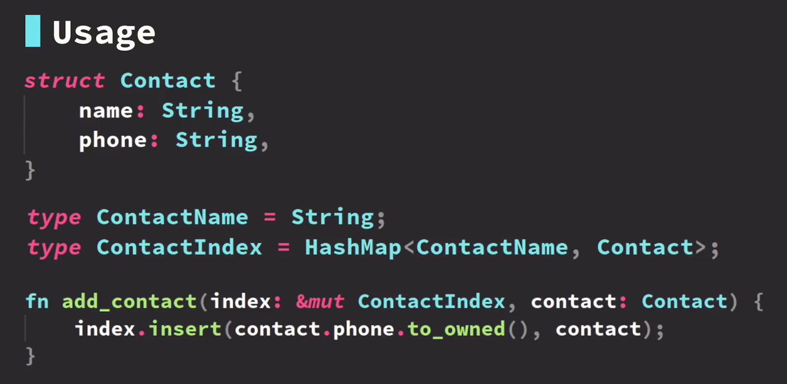
16
16-1 from / into


16-2


16-3
use crate::InputEvent::Key;
#[derive(Debug)]
struct Uppercase(String);
impl From<String> for Uppercase {
fn from(data: String) -> Self {
Uppercase(data.to_uppercase())
}
}
impl From<&str> for Uppercase {
fn from(data: &str) -> Self {
Uppercase(data.to_uppercase())
}
}
fn example1() {
let upper = Uppercase::from("lowercase");
println!("{:?}", upper);
let upper: Uppercase = "lowercase".into();
println!("{:?}", upper);
}
#[derive(Debug)]
enum KeyPress {
Down,
Up,
}
#[derive(Debug)]
struct KeyEvent {
keycode: u16,
state: KeyPress,
}
#[derive(Debug)]
enum InputEvent {
Key(u16, KeyPress),
Mouse,
}
// KeyEvent -> InputEvent
impl From<KeyEvent> for InputEvent {
fn from(ev: KeyEvent) -> Self {
InputEvent::Key(ev.keycode, ev.state)
}
}
fn example2() {
let key_ev = KeyEvent {
keycode: 5,
state: KeyPress::Down,
};
let input_ev = InputEvent::from(key_ev);
println!("{:?}", input_ev);
let key_ev = KeyEvent {
keycode: 5,
state: KeyPress::Down,
};
let input_ev: InputEvent = key_ev.into();
println!("{:?}", input_ev);
}
use thiserror::Error;
use log::error;
#[derive(Debug, Error)]
enum NetworkError {
#[error("connection timed out")]
Timeout
}
#[derive(Debug, Error)]
enum DatabaseError {
#[error("error querying database")]
QueryFailure
}
#[derive(Debug, Error)]
enum ApiError {
#[error("network error: {0}")]
Network(#[from] NetworkError),
#[error("database error: {0}")]
// [#from]自动实现转换
Database(#[from] DatabaseError),
}
// impl From<NetworkError> for ApiError {
// fn from(err: NetworkError) -> Self {
// Self::Network(err)
// }
// }
//
// impl From<DatabaseError> for ApiError {
// fn from(err: DatabaseError) -> Self {
// Self::Database(err)
// }
// }
fn do_stuff() -> Result<(), ApiError> {
Err(NetworkError::Timeout)?
}
fn main() {
example1();
example2();
}
16-4

use std::convert::TryFrom;
use std::num::ParseIntError;
use thiserror::Error;
#[derive(Debug, Error)]
enum RgbError {
#[error("hex colors must begin with a hash (#)")]
MissingHash,
#[error("failed to parse hex digit: {0}")]
ParseError(#[from] std::num::ParseIntError),
#[error("invalid hex color length (must be 6)")]
LengthError,
}
#[derive(Debug, Eq, PartialEq)]
struct Rgb(u8, u8, u8);
impl TryFrom<&str> for Rgb {
type Error = RgbError;
fn try_from(hex: &str) -> Result<Self, Self::Error> {
if !hex.starts_with('#') {
return Err(RgbError::MissingHash);
}
if hex.len() != 7 {
return Err(RgbError::LengthError);
}
let (r, g, b) = (
// hex的第1到第2个字符, 进制是16进制
u8::from_str_radix(&hex[1..=2], 16)?,
u8::from_str_radix(&hex[3..=4], 16)?,
u8::from_str_radix(&hex[5..=6], 16)?,
);
Ok(Self(r, g, b))
}
}
// impl From<ParseIntError> for RgbError {
// fn from(err: ParseIntError) -> Self {
// Self::ParseError(err)
// }
// }
fn main() {}
mod test {
use super::Rgb;
use std::convert::TryFrom;
#[test]
fn converts_valid_hex_color() {
let expected = Rgb(0, 204, 102);
let actual = Rgb::try_from("#00cc66");
assert_eq!(
actual.is_ok(),
true,
"valid hex code should be converted to Rgb"
);
assert_eq!(actual.unwrap(), expected, "wrong Rgb value");
}
#[test]
fn fails_on_invalid_hex_digits() {
assert_eq!(
Rgb::try_from("#0011yy").is_err(),
true,
"should be an error with invalid hex color"
);
}
#[test]
fn fails_when_missing_hash() {
assert_eq!(
Rgb::try_from("001100").is_err(),
true,
"should be an error when missing hash symbol"
);
}
#[test]
fn fails_when_missing_color_components() {
assert_eq!(
Rgb::try_from("#0011f").is_err(),
true,
"should be an error when missing components"
);
}
}
16-5


17
17-1
fn math(a: i32, b: i32, op: Box<dyn Fn(i32, i32) -> i32>) -> i32 {
op(a, b)
}
fn main() {
let add = |a, b| a + b;
let add: Box<_> = Box::new(add);
println!("{}", math(2, 2, add));
let sub = |a, b| a - b;
let sub: Box<_> = Box::new(sub);
println!("{}", math(2, 2, sub));
let name = "john";
// 使用move才能使用闭包外的数据
let mul = Box::new(move |a, b| {
println!("hello {}", name);
a * b
});
println!("{}", math(3, 4, mul))
}
17-2 threads
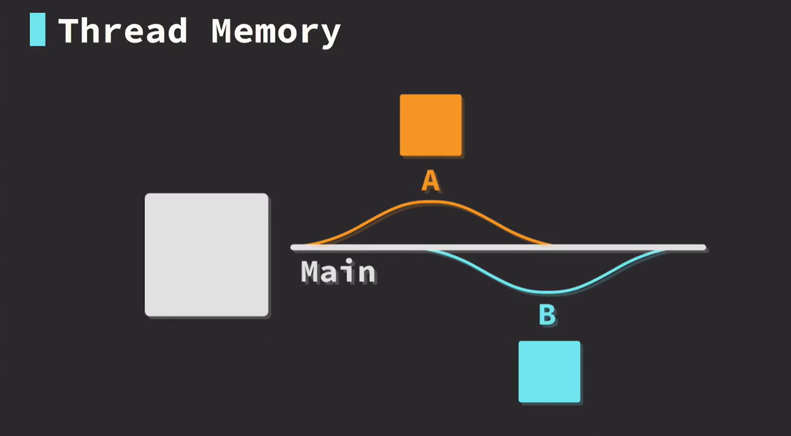
17-3
use std::thread;
fn main() {
let iterations = 10;
let a = thread::spawn(move || {
for i in 1..iterations {
println!("A:{}", i);
}
});
let b = thread::spawn(move || {
for i in 1..iterations {
println!("B:{}", i);
}
});
a.join();
b.join();
}
use std::thread;
use std::thread::JoinHandle;
use std::time::Duration;
fn main() {
let value: JoinHandle<usize> = thread::spawn(move || {
thread::sleep(Duration::from_secs(1));
42
});
println!("Waiting on thread");
match value.join() {
Ok(n) => { println!("{}", n); }
Err(e) => { println!("error joining thread: {:?}", e); }
}
}
use std::thread;
fn main() {
let data = vec!['a', 'b', 'c'];
let caps = thread::spawn(move || {
let data: Vec<char> =
data.iter().map(|c| c.to_ascii_uppercase()).collect();
data
});
println!("Waiting for value...");
match caps.join() {
Ok(n) => { println!("{:?}", n); }
Err(e) => { println!("error joining thread: {:?}", e); }
}
}
17-4
use std::thread;
use std::time::Duration;
fn msg_hello() -> &'static str {
use std::time::Duration;
std::thread::sleep(Duration::from_millis(1000));
"Hello, "
}
fn msg_thread() -> &'static str {
use std::time::Duration;
std::thread::sleep(Duration::from_millis(1000));
"threads"
}
fn msg_excited() -> &'static str {
use std::time::Duration;
std::thread::sleep(Duration::from_millis(1000));
"!"
}
fn main() {
use std::thread;
let msg_one = thread::spawn(move || msg_hello());
let msg_two = thread::spawn(move || msg_thread());
let msg_three = thread::spawn(move || msg_excited());
let msg_one = msg_one.join().expect("failed to join msg one");
let msg_two = msg_two.join().expect("failed to join msg two");
let msg_three = msg_three.join().expect("failed to join msg three");
println!("{}{}{}", msg_one, msg_two, msg_three);
}
17-5 channels
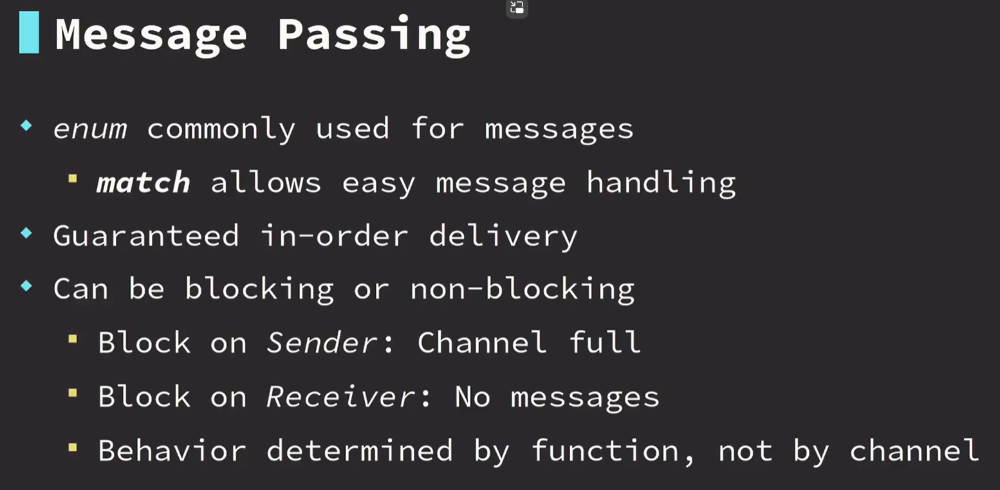


17-6
use crossbeam_channel::{RecvError, unbounded};
use std::thread;
enum ThreadMsg {
PrintData(String),
Sum(i64, i64),
Quit,
}
fn main() {
let (s, r) = unbounded();
// 这个线程循环接收消息
let handle = thread::spawn(move || loop {
match r.recv() {
Ok(msg) => match msg {
ThreadMsg::PrintData(d) => println!("{}", d),
ThreadMsg::Sum(lhs, rhs) => println!("{}+{}={}", lhs, rhs, (lhs + rhs)),
ThreadMsg::Quit => {
println!("thread terminating");
break;
}
},
Err(e) => {
println!("disconnected");
break;
}
}
});
s.send(ThreadMsg::PrintData("hello from main".to_owned()));
s.send(ThreadMsg::Sum(10, 10));
// s.send(ThreadMsg::Quit);
// 断开端与端的连接
drop(s);
handle.join();
}
17-7
use crossbeam_channel::{RecvError, unbounded};
use std::thread;
enum WorkerMsg {
PrintData(String),
Sum(i64, i64),
Quit,
}
enum MainMsg {
SumResult(i64),
WorkerQuit,
}
fn main() {
let (worker_tx, worker_rx) = unbounded();
let (main_tx, main_rx) = unbounded();
// 这个线程循环接收消息
let worker = thread::spawn(move || loop {
match worker_rx.recv() {
Ok(msg) => match msg {
WorkerMsg::PrintData(d) => println!("Worker: {}", d),
WorkerMsg::Sum(lhs, rhs) => {
println!("Worker: summing...");
main_tx.send(MainMsg::SumResult(lhs + rhs));
()
}
WorkerMsg::Quit => {
println!("Worker: thread terminating");
main_tx.send(MainMsg::WorkerQuit);
break;
}
},
Err(e) => {
println!("disconnected");
main_tx.try_send(MainMsg::WorkerQuit);
break;
}
}
});
worker_tx.send(WorkerMsg::PrintData("hello from main".to_owned()));
worker_tx.send(WorkerMsg::Sum(10, 10));
worker_tx.send(WorkerMsg::Quit);
// 断开端与端的连接
// drop(worker_tx);
while let Ok(msg) = main_rx.recv() {
match msg {
MainMsg::SumResult(anwser) => { println!("Main answer = {}", anwser); }
MainMsg::WorkerQuit => { println!("Main: worker terminated") }
}
}
worker.join();
}
17-8
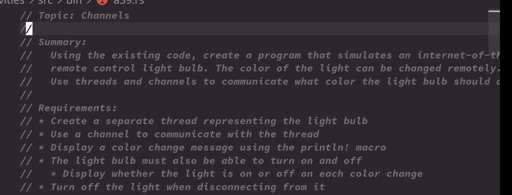
use crossbeam_channel::{unbounded, Receiver};
use std::thread::{self, JoinHandle};
use colored::*;
enum LightMsg {
ChangeColor(u8, u8, u8),
Disconnect,
Off,
On,
}
enum LightStatus {
Off,
On,
}
fn spawn_light_thread(receiver: Receiver<LightMsg>) -> JoinHandle<LightStatus> {
thread::spawn(move || {
let mut light_status = LightStatus::Off;
loop {
if let Ok(msg) = receiver.recv() {
match msg {
LightMsg::ChangeColor(r, g, b) => {
println!("Color changed to: {}", " ".on_truecolor(r, g, b));
match light_status {
LightStatus::Off => { println!("Light is off"); }
LightStatus::On => { println!("Light is on"); }
}
}
LightMsg::Disconnect => {
println!("disconnecting");
light_status = LightStatus::Off;
break;
}
LightMsg::Off => {
println!("Turned light off");
light_status = LightStatus::Off;
}
LightMsg::On => {
println!("Turned light on");
light_status = LightStatus::On;
}
}
} else {
println!("channel disconnected");
light_status = LightStatus::Off;
break;
}
}
light_status
})
}
fn main() {
let (s, r) = unbounded();
let light = spawn_light_thread(r);
s.send(LightMsg::On);
s.send(LightMsg::ChangeColor(255, 0, 0));
s.send(LightMsg::ChangeColor(0, 128, 0));
s.send(LightMsg::ChangeColor(0, 0, 255));
s.send(LightMsg::Off);
s.send(LightMsg::Disconnect);
let light_status = light.join();
}
18
18-1 smart point
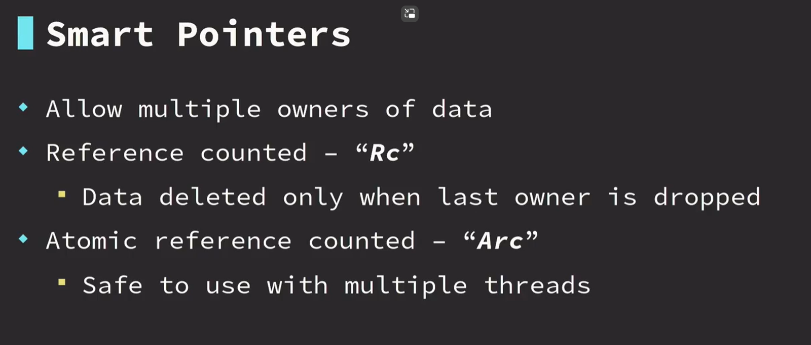

18-2 cell & refcell


18-3
use std::cell::RefCell;
use std::rc::Rc;
#[derive(Debug)]
enum MenuItem {
Drink,
Salad,
}
#[derive(Debug)]
struct ItemOrder {
item: MenuItem,
quantity: u32,
}
#[derive(Debug)]
struct TableOrder {
items: Vec<ItemOrder>,
}
fn new_table_order() -> TableOrder {
TableOrder {
items: vec![ItemOrder {
item: MenuItem::Drink,
quantity: 1,
}]
}
}
// 引用计数指针
type Order = Rc<RefCell<Vec<TableOrder>>>;
#[derive(Debug)]
struct Chef(Order);
#[derive(Debug)]
struct WaitStaff(Order);
#[derive(Debug)]
struct Accounting(Order);
// 共享可变数据
fn main() {
let orders = Rc::new(RefCell::new(vec![]));
let chef = Chef(Rc::clone(&orders));
let wait_staff = Chef(Rc::clone(&orders));
let account = Chef(Rc::clone(&orders));
let order = new_table_order();
{
orders.borrow_mut().push(order);
}
dbg!(chef.0.borrow());
drop(chef);
dbg!(wait_staff.0.borrow());
drop(wait_staff);
dbg!(account.0.borrow());
}
18-4
use std::cell::RefCell;
use std::rc::Rc;
#[derive(Debug)]
enum Vehicle {
Car,
Truck,
}
#[derive(Debug, Hash, PartialOrd, PartialEq)]
enum Status {
Available,
Unavailable,
Rented,
Maintenance,
}
#[derive(Debug)]
struct Rentals {
status: Status,
vehicle: Vehicle,
vin: String,
}
struct Corporate(Rc<RefCell<Vec<Rentals>>>);
struct StoreFront(Rc<RefCell<Vec<Rentals>>>);
fn main() {}
mod test {
use std::cell::Ref;
use super::*;
#[test]
fn update_status() {
let vehicles = vec![
Rentals {
status: Status::Available,
vehicle: Vehicle::Car,
vin: "123".to_owned(),
},
Rentals {
status: Status::Maintenance,
vehicle: Vehicle::Truck,
vin: "abc".to_owned(),
},
];
let vehicles = Rc::new(RefCell::new(vehicles));
let corporate = Corporate(Rc::clone(&vehicles));
let storefront = StoreFront(Rc::clone(&vehicles));
{
let mut rentals = storefront.0.borrow_mut();
if let Some(car) = rentals.get_mut(0) {
assert_eq!(car.status, Status::Available);
car.status = Status::Rented;
}
}
{
let mut rentals = corporate.0.borrow_mut();
if let Some(car) = rentals.get_mut(0) {
assert_eq!(car.status, Status::Rented);
car.status = Status::Available;
}
}
let rentals = storefront.0.borrow();
if let Some(car) = rentals.get(0) {
assert_eq!(car.status, Status::Available);
}
}
}
18-5

18-6


18-7
use parking_lot::Mutex;
use std::sync::Arc;
use std::thread;
use std::thread::spawn;
use std::time::Duration;
type SharedSignData = Arc<Mutex<String>>;
struct DigitalSignBoard {
display: SharedSignData,
}
impl DigitalSignBoard {
fn update(&self) {
let data = self.display.lock();
println!("sign data='{}'", data);
}
}
fn spawn_display_thread(display_data: SharedSignData) {
thread::spawn(|| {
let board = DigitalSignBoard {
display: display_data
};
loop {
board.update();
thread::sleep(Duration::from_millis(200));
}
});
}
fn change_data(display_data: SharedSignData, new_data: &str) {
let mut data = display_data.lock();
*data = new_data.to_owned();
println!("-----update:{}", new_data);
}
fn main() {
let display_data = Arc::new(Mutex::new("initial".to_owned()));
spawn_display_thread(Arc::clone(&display_data));
thread::sleep(Duration::from_millis(100));
change_data(Arc::clone(&display_data), "message 1");
thread::sleep(Duration::from_millis(600));
change_data(Arc::clone(&display_data), "another message");
thread::sleep(Duration::from_millis(600));
change_data(Arc::clone(&display_data), "goodbye");
thread::sleep(Duration::from_millis(600));
}
18-8
use crossbeam_channel::{unbounded, Receiver, Sender};
use std::collections::VecDeque;
use std::sync::Arc;
use std::thread::{self, JoinHandle};
use std::time::Duration;
use parking_lot::Mutex;
#[derive(Clone)]
enum Job {
Print(String),
Sum(isize, isize),
}
#[derive(Clone)]
enum Message {
AddJob(Job),
Quit,
}
struct Worker<M> {
tx: Sender<M>,
_rx: Receiver<M>,
handle: JoinHandle<()>,
}
impl Worker<Message> {
fn add_job(&self, job: Job) {
self.tx
.send(Message::AddJob(job))
.expect("failed to add job")
}
fn join(self) {
self.handle.join().expect("failed to join thread");
}
fn send_msg(&self, msg: Message) {
self.tx.send(msg).expect("failed to send message");
}
}
fn spawn_worker(counter: Arc<Mutex<usize>>) -> Worker<Message> {
let (tx, rx) = unbounded();
let rx_thread = rx.clone();
let handle = thread::spawn(move || {
let mut jobs = VecDeque::new();
loop {
loop {
for job in jobs.pop_front() {
match job {
Job::Print(msg) => println!("{}", msg),
Job::Sum(lhs, rhs) => println!("{}+{}={}", lhs, rhs, (lhs + rhs))
}
let mut counter = counter.lock();
*counter += 1;
}
if let Ok(msg) = rx_thread.try_recv() {
match msg {
Message::AddJob(job) => {
jobs.push_back(job);
continue;
}
Message::Quit => return,
}
} else {
break;
}
}
thread::sleep(Duration::from_millis(100));
}
});
Worker {
tx,
_rx: rx,
handle,
}
}
fn main() {
let jobs = vec![
Job::Print("hello".to_owned()),
Job::Sum(2, 2),
Job::Print("world".to_owned()),
Job::Sum(4, 4),
Job::Print("two words".to_owned()),
Job::Sum(1, 1),
Job::Print("a print job".to_owned()),
Job::Sum(10, 10),
Job::Print("message".to_owned()),
Job::Sum(3, 4),
Job::Print("thread".to_owned()),
Job::Sum(9, 8),
Job::Print("rust".to_owned()),
Job::Sum(1, 2),
Job::Print("compiler".to_owned()),
Job::Sum(9, 1),
];
let jobs_sent = jobs.len();
let job_counter = Arc::new(Mutex::new(0));
let mut workers = vec![];
for _ in 0..4 {
let worker = spawn_worker(Arc::clone(&job_counter));
workers.push(worker);
}
let mut worker_ring = workers.iter().cycle();
for job in jobs.into_iter() {
let worker = worker_ring.next().expect("failed to get worker");
worker.add_job(job);
}
for worker in &workers {
worker.send_msg(Message::Quit);
}
for worker in workers {
worker.join();
}
println!("Jobs send: {}", jobs_sent);
let jobs_completed = job_counter.lock();
println!("Jobs completed: {}", jobs_completed);
}
19
19-1 comparing enums
19-2 comparing struct


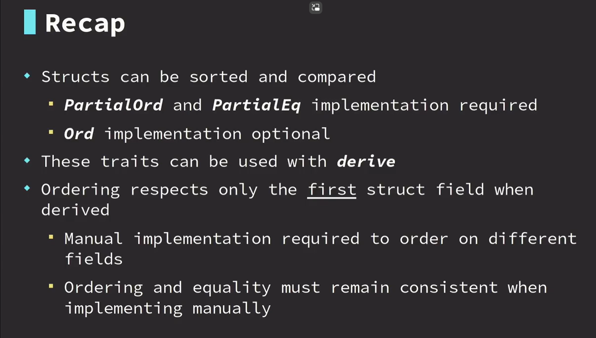
19-3


19-4


19-5


19-6
use std::collections::HashMap;
#[derive(Debug, Hash, Eq, PartialEq)]
enum Fruit {
Apple,
Banana,
Orange,
}
struct FruitStand {
fruit: HashMap<Fruit, u32>,
}
impl IntoIterator for FruitStand {
// iter遍历时,每个item的类型
type Item = (Fruit, u32);
type IntoIter = std::collections::hash_map::IntoIter<Fruit, u32>;
fn into_iter(self) -> Self::IntoIter {
self.fruit.into_iter()
}
}
// 使用了外部的变量, 需要声明生命周期
impl<'a> IntoIterator for &'a FruitStand {
// iter遍历时,每个item的类型
type Item = (&'a Fruit, &'a u32);
type IntoIter = std::collections::hash_map::Iter<'a, Fruit, u32>;
fn into_iter(self) -> Self::IntoIter {
self.fruit.iter()
}
}
impl<'a> IntoIterator for &'a mut FruitStand {
// iter遍历时,每个item的类型
type Item = (&'a Fruit, &'a mut u32);
type IntoIter = std::collections::hash_map::IterMut<'a, Fruit, u32>;
fn into_iter(self) -> Self::IntoIter {
self.fruit.iter_mut()
}
}
fn main() {
let mut fruit = HashMap::new();
fruit.insert(Fruit::Banana, 5);
fruit.insert(Fruit::Apple, 2);
fruit.insert(Fruit::Orange, 6);
let fruit = fruit;
let mut store = FruitStand { fruit };
// for (fruit, stock) in store.into_iter() {
// for (fruit, stock) in store {
// println!("{:?} {:?}", fruit, stock);
// }
for (fruit, stock) in &store {
println!("{:?} {:?}", fruit, stock);
}
for (fruit, stock) in &store {
println!("{:?} {:?}", fruit, stock);
}
for (fruit,stock)in &mut store{
*stock+=10;
println!("{:?} {:?}", fruit, stock);
}
}
19-7
struct ScoreMultiplier {
amount: usize,
per_iteration: usize,
per_iteration_bonus: usize,
}
impl ScoreMultiplier {
fn new() -> Self {
Self {
amount: 0,
per_iteration: 1,
per_iteration_bonus: 0,
}
}
}
impl Iterator for ScoreMultiplier {
type Item = usize;
fn next(&mut self) -> Option<Self::Item> {
self.amount += self.per_iteration + self.per_iteration_bonus;
Some(self.amount)
}
}
fn main() {
let mut multiplier = ScoreMultiplier::new();
println!("{:?}", multiplier.next());
println!("{:?}", multiplier.next());
println!("{:?}", multiplier.next());
println!("per iteration bonus now = 1");
multiplier.per_iteration_bonus = 1;
println!("{:?}", multiplier.next());
println!("{:?}", multiplier.next());
}
19-8


19-9 macros


19-10 managing integer overflow


20
20-1 turbofish 当编译器不能确认类型时使用


20-2 loop labels

20-3


20-4 struct update syntax

escape sequences & raw strings


21
21-1 ide | rust-analyzer
21-2 clippy
21-3 error lens
22
22-1 dotenv


22-2 serde


22-3 rand


22-4 cached


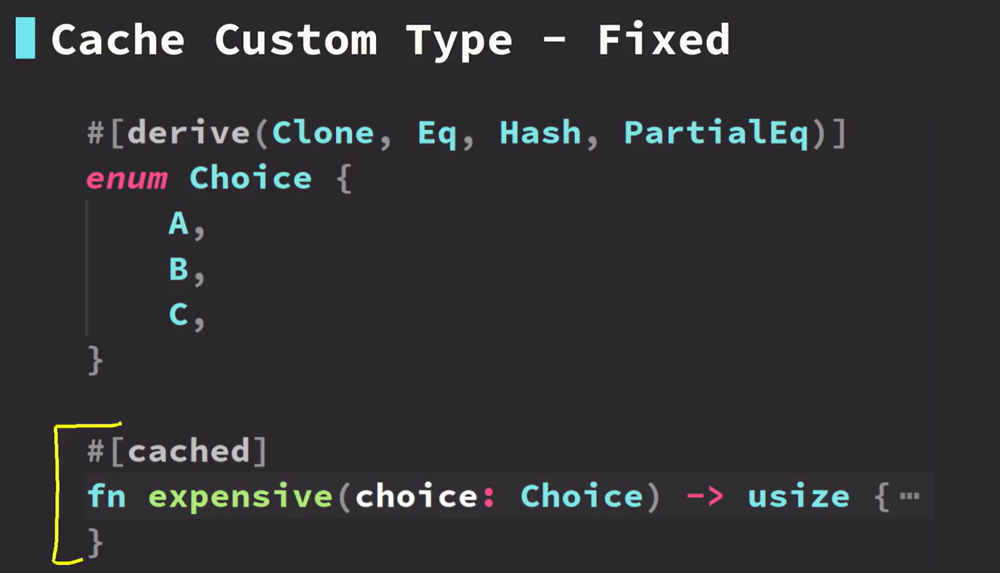
22-5 regex

22-6 chrono 处理时间


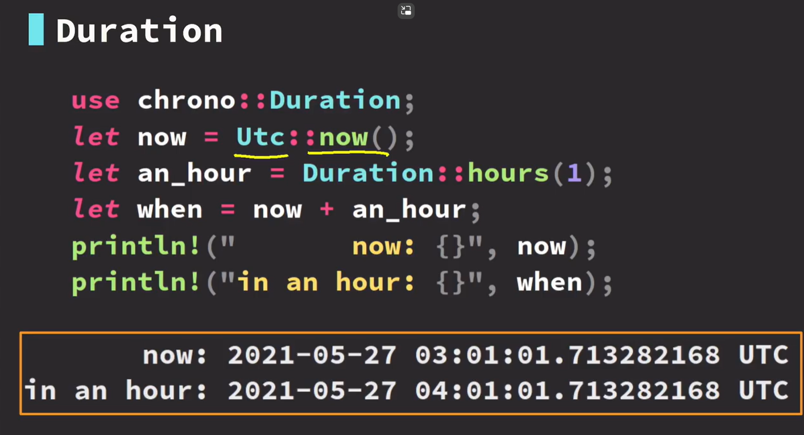
22-7 strum 计算


22-8 derive_more


22-9 rayon
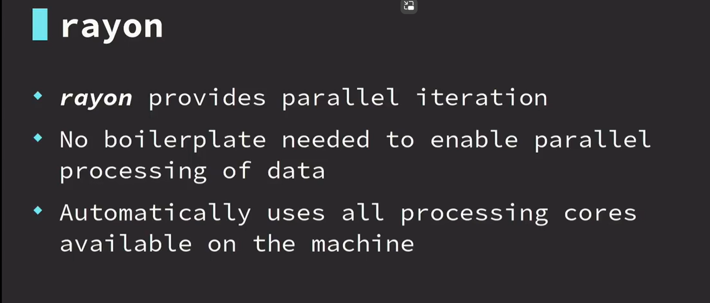

24
24-1 asynchronous code primer
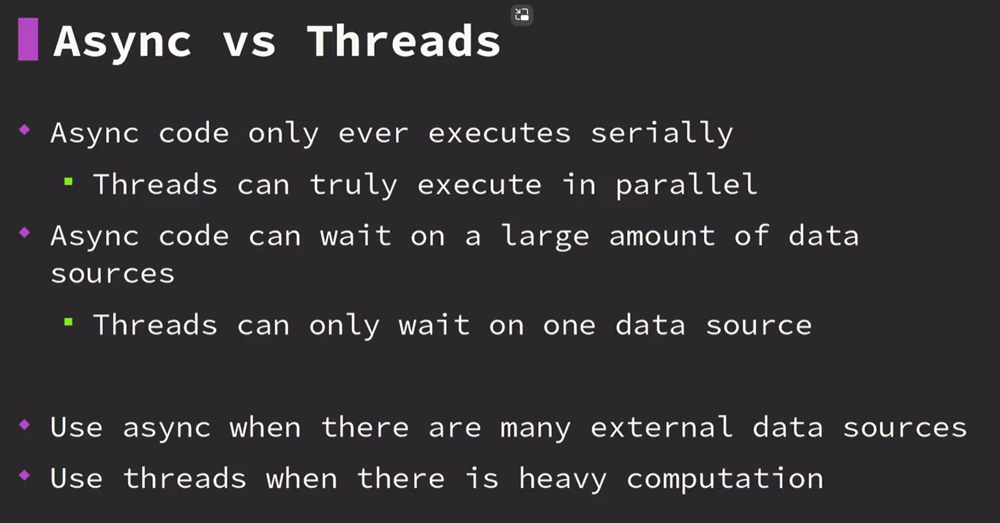


24-2 clipStash

24-3
 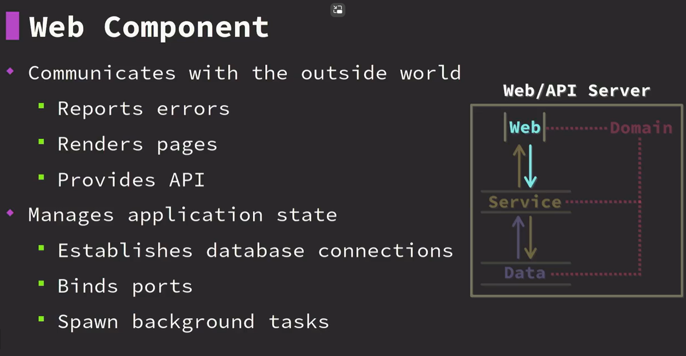
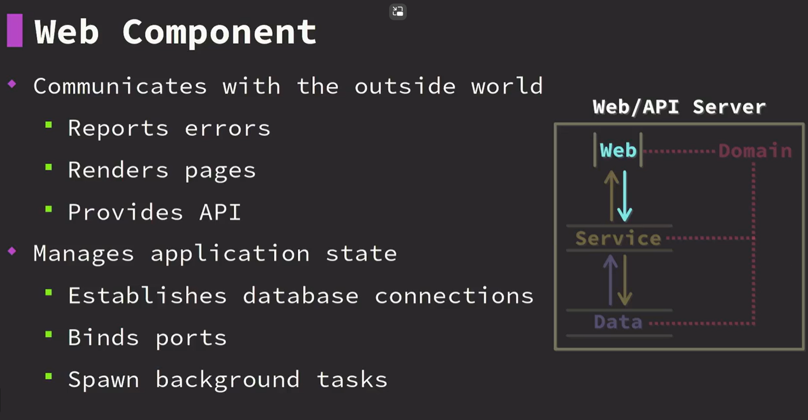
24-4
# Cargo.toml
[package]
name = "clipstash"
version = "0.1.0"
edition = "2021" # 2018
# See more keys and their definitions at https://doc.rust-lang.org/cargo/reference/manifest.html
[lib]
name = "clipstash"
path = "src/lib/mod.rs"
[dependencies]
serde = "1"
serde_json = "1"
// field/mod.rs
// 有mod文件的才能被识别为模块
mod clip_id;
pub use clip_id::clipId;
mod shortcode;
pub use shortcode::Shortcode;
mod content;
pub use content::Content;
mod title;
pub use title::Title;
mod posted;
pub use posted::Posted;
mod expires;
pub use expiresExpires;
mod password;
pub use password::Password;
mod hits;
pub use hits::Hits;
// clip/mod.rs
use serde::{Deserialize, Serialize};
pub mod field;
#[derive(Debug, Clone, Deserialize, Serialize)]
pub struct Clip {
pub clip_id: field::clipId,
pub shortcode: field::ShortCode,
pub content: field::Content,
pub title: field::Title,
pub posted: field::Posted,
pub expires: field::Expires,
pub password: field::Password,
pub hits: field::Hits,
}
24-5